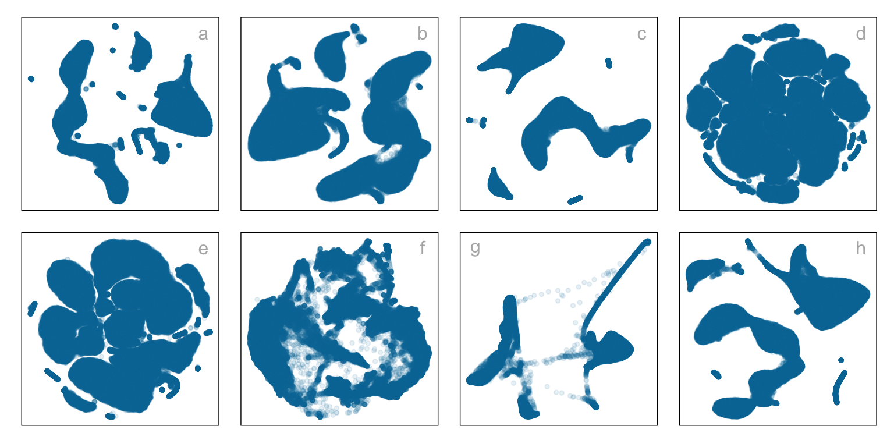

1 Introduction
Historically, 2D representations of high-dimensional data have been computed using multidimensional scaling (MDS) (borg2005?), which includes principal components analysis (PCA) (jolliffe2011?) as a special case. The 2D representation can be viewed as a layout of points in 2D produced by an embedding procedure that maps the data from high dimensions. In MDS, the 2D layout is constructed by minimizing a stress function that differences distances between points in high-dimensions with potential distances between points in 2D. Various formulations of the stress function result in non-metric scaling (saeed2018?) and isomap (silva2002?). Challenges in working with high-dimensional data, including visualization, are outlined in (johnstone2009?).
Non-linear dimension reduction (NLDR) is popular for making a convenient low-dimensional representation of high-dimensional data by applying non-linear transformation and all designed to better capture specific structures potentially existing in high-dimensions. Here we focus on five currently popular techniques, t-distributed stochastic neighbor embedding (tSNE) (laurens2008?), uniform manifold approximation and projection (UMAP) (leland2018?), potential of heat-diffusion for affinity-based trajectory embedding (PHATE) algorithm (moon2019?), large-scale dimensionality reduction Using triplets (TriMAP) (amid2022?), and pairwise controlled manifold approximation (PaCMAP) (yingfan2021?). tNSE and UMAP can be considered to produce the 2D minimizing the divergence between two distributions, where the distributions are modeling the inter-point distances. PHATE, TriMAP and PaCMAP are examples of diffusion processes (coifman2005?) spreading to capture geometric shapes, that include both global and local structure.
The various layouts created by Figure 1.1 demonstrate the different outcomes that can result from the choices of methods and parameters, as well as the random seed used to start the calculation. Key structures interpreted from these views suggest: (1) highly separated clusters (a, b, e, g, h) with the number ranging from 3-6; (2) stringy branches (f), and (3) barely separated clusters (c, d) which would contradict the other representations.
These variations occur due to the different perspectives on the distances between data points provided by the methods and parameter choices.
Another way to visualize high-dimensional data is through linear projections. PCA is the traditional method, resulting in a new set of variables that are linear combinations of the original variables. Tours, as defined by (lee2021?), expand on this concept by producing dynamic linear projection visualizations that offer views of the data from all angles. (lee2021?) provides an overview of the key advancements in tours. Numerous tour algorithms are available, with many included in the R package tourr (wickham2011?), and versions that offer enhanced interactivity in langevitour (harrison2024?) and detourr (hart2022?). Linear projections offer a reliable way to view high-dimensional data as they do not distort the space, making them more accurate representations of the data structure. However, linear projections can become cluttered, and global patterns can obscure local structure. The simple act of projecting data from high-dimensional spaces leads to piling (laa2022?), where data concentrates in the center of the projections.
NLDR is designed to escape these issues, to exaggerate structure so that it can be observed. However, NLDR can hallucinate wildly, to suggest patterns that are not actually present in the data. The research project addresses this significant issue by proposing methods to understand better whether the NDLR representations are reliable or hallucinations. These methods are designed to enable a more profound understanding of the quality and validity of NLDR-derived low-dimensional representations. By incorporating rigorous evaluation techniques, the project seeks to identify instances where the NLDR models genuinely capture the essential structures present in the data and where they might introduce artifacts or distortions, leading to potentially misleading representations. This meticulous examination and validation process contribute to enhancing the robustness and credibility of NLDR techniques in high-dimensional data analysis.
1.1 Thesis Outline
The thesis is structured as follows.
Chapter 7 summarises the contribution of the work and the (potential) impact, and discusses some future plans.